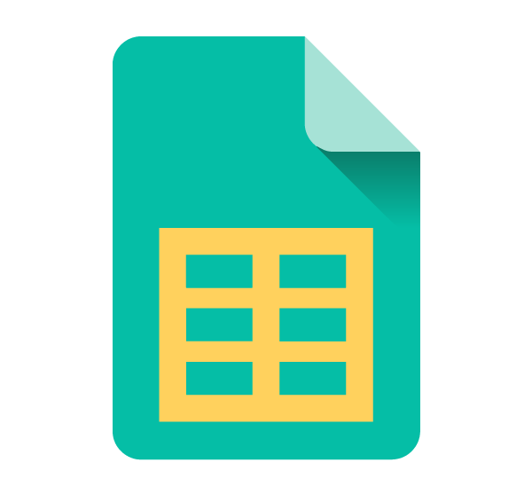

A Shopify app solution for e-commerce insights
Have you ever wondered what your customers are adding to their carts? As shop owners, we created Cart Insights for the crucial insights and data that we get when we see exactly what items every shop visitor is adding to their shopping carts.
Shopping cart additions are the first step in a shop's conversion funnel, and knowing what your shoppers are saving in their carts will give you a better understanding of customer behavior, shopping patterns, and product popularity.
Cart Insights app installation is simple and involves no technical setup or configuration. As soon as it is installed, it begins recording your shop's customer cart activity.
Cart Insights provides much more detail than the admin dashboard's top products lists, abandoned carts, and summaries. The Customer Timeline feature gives you a chronological view of each shopper's journey so you can see what products and variants were added to cart, what was later removed, when checkout milestones were reached, and whether the cart converted into an order. Cart Insights shows variant-specific images of each cart item, so you can see at a glance what sizes, colors, and styles are most popular.
Customer details include referral data, landing page, discount code, email, phone number, shipping destination, checkout reached status, and conversion/order placed status. The further a customer gets through the checkout funnel, the more information is available to view.
Cart Insights also provides summary reports so you can view the most popular products, variants, and vendors. There are also summary reports for top landing pages and referral sites.
The optional and configurable emailed Cart Insights Daily Report provides an essential daily review of your shop's customer cart activity. This report arrives when you want it, and it's the perfect resource and daily summary for a busy e-commerce professional!
Key Features
- View each customer's shopping cart contents in real-time
- Storefront Cart Tracking records customer browser data, filters search bot activity, and links logged-in Customer Accounts with their carts
- Customer Timeline gives a chronological view of each shopper's site navigation, cart activity, checkout and conversion activity
- Dashboard provides an overview of your store's recent performance in one place with key metrics and insights
- Intuitive and responsive visual UI for fast reporting
- View Summary reports including Top Products, Top Product Variants, and Top Vendors
- CSV exports are available for both the cart activity report and summary reports such as Top Products and Top Product Variants
- View details including referral site, landing page, discount code, shipping destination, and customer details
- Links provide quick navigation to Order, Customer, and Product admin pages
- Receive optional daily emailed reports with 24 hour cart activity
Storefront Cart Tracking
Storefront Cart Tracking is an optional feature for shops that want richer pre-checkout visibility. It records cart IP addresses and links logged-in customer accounts to their cart activity so that customer details such as name and email can be visible before the checkout stage. When enabled, any logged-in Customer Account's customer ID is sent to Cart Insights so the app can associate that account with an active cart in the Customer Timeline and Cart Activity views.
Once Storefront Cart Tracking is activated, all customer carts including anonymous carts can include IP geolocation data within the app's web UI, Daily Email Report, and CSV Export Report. The IP geolocation data includes city, region or state, and country.
Storefront Cart Tracking also provides the landing page URL and referrer for customer carts, including anonymous carts that have not yet reached checkout.
Storefront Cart Tracking indicates whether the customer browser device is a mobile phone, tablet, or desktop. It also shows the device platform when available, such as iOS, macOS, Android, or Windows.
Customer Timeline
Customer Timeline is a Cart Insights app feature that brings a shopper's activity together into a single chronological view. It helps merchants quickly understand how a customer moved from browsing to cart activity, checkout progress, and conversion.
The timeline shows page visits, product views, cart adds and removals, search terms, and checkout events so your support and marketing teams can review a complete customer journey.

CSV Data ExportCSV exports are available for both the Cart Activity Report and summary reports such as Top Products, Top Product Variants, and related analytics views. Exported CSV files can be downloaded and opened in spreadsheet programs such as Microsoft Excel or Google Sheets.
The Cart Activity CSV export includes 30+ columns of data for each customer and each customer cart item, including the full referral URL as well as separate columns for utm_campaign, utm_medium, and utm_source. Exported CSV data can easily be used for marketing and analytics.
Reports
Cart Insights provides comprehensive analytics reports to help you understand shopping behavior and identify trends. All reports offer configurable time windows, comparison with previous periods to track percentage changes, and customizable display options.
Summary reports can also be exported to CSV, making it easy to share Top Products, Top Product Variants, referral, landing page, and other report data outside the app.
- Top Products & Top Product Variants — View the most popular products and specific product variants based on unique cart adds or total quantity. Segment by variant to analyze options like color and size.
- Top Cart Vendors — Identify which product vendors are most frequently added to customer carts, helping you understand brand performance.
- Top Referral Sites — Track which external sites are driving traffic and cart activity to your shop.
- Top Landing Pages — Discover which pages attract visitors and drive conversions by analyzing cart creation by landing page.
- Carts Per Day — Monitor daily shopping activity with a visual timeline showing cart creation trends and anomalies.
Daily Email Report
The Cart Insights Daily Email Report is a configurable shop admin emailed daily report that provides a daily summary of shop cart activities. Top Products shows the most popular products added to cart, Top Product Variants shows the most popular product variants added to cart, and Cart Activity shows individual customer cart activity.
Variant Property Fields
The Cart Activity Report can be configured to show Variant Property fields. These are custom product options or product properties used by other Shopify apps for custom products, configurable products and services, personalization, engraving, price add-ons, etc. The ability to view these variant properties can be quite useful when providing customer support.
Shopify App Store
Cart Insights is listed on the Shopify App Store. To install the app, please visit our listing.

Privacy Policy
Cart Insights is dedicated to customer and user privacy and data protection. We only collect and use data that is needed to provide the App's functionality. We will not share, sell, or store any data collected by the App for any other purposes.